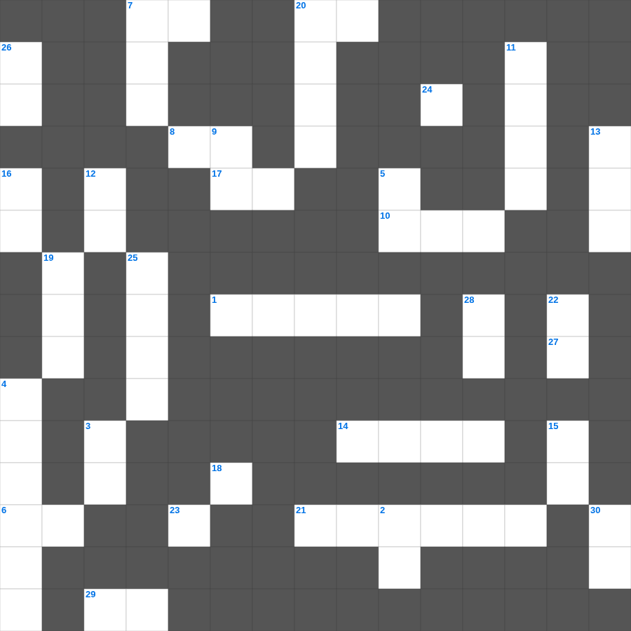

시편 마스터 100 (2/2)
📌 서비스 정의
십자가로세로는 교회 주보와 주일학교에서 사용할 수 있는 성경 기반 가로세로 퍼즐 서비스입니다. 성경 인물, 사건, 핵심 구절을 바탕으로 제작되었습니다. 온라인 풀이 및 인쇄 기능을 제공합니다.
📖 시편란?
시편은 다윗을 비롯한 여러 저자들이 쓴 150편의 기도와 찬양 모음집으로, 감사와 탄식, 회개와 신뢰 등 다양한 신앙의 감정을 담고 있습니다.
📚 시편의 주요 사건·주제
다윗의 탄식 시편들 · 찬양과 감사의 시편 · 메시아 예언 시편 · 회개의 시편(시 51편 등) · 성전 순례의 시편(성전에 올라가는 노래)
오늘은 시편의 주요 내용을 담은 시편 가로세로 퀴즈를 준비했습니다. 총 35개의 힌트가 있으며, 주일학교 교재나 성경공부 자료로 활용하기 좋습니다. 무료로 즐기는 시편 가로세로 퍼즐을 지금 바로 풀어보세요!

📝 가로 힌트
1. 이스라엘이 바벨론으로 끌려간 사건
2. 호세아의 첫째 아들 이름 (하나님이 흩으신다)
6. 이스라엘의 초대 왕
7. 화목제물을 삼 일째까지 남겨두면 이것이 됨
8. 베드로전서 4장 7절: 만물의 마지막이 가까웠으니 무엇하라
10. 베데스다 못가에서 병자를 고치신 날은 무슨 요일이었나
10. 일곱째 날에 하나님이 하신 일
14. 아사셀 염소는 어디로 보내는가
17. 주 안에서 유오디아와 순두게에게 권한 것: 같은 이것을 품으라
20. 대속죄일에는 스스로 이것을 괴롭게 해야 함
21. 하나님이 세우신 권위의 증거로 싹이 난 아론의 이것
24. 보디발 아내의 유혹을 뿌리치고 요셉이 간 곳
27. 내가 모든 사람에게서 자유로우나 스스로 모든 사람에게 이것이 된 것은 더 많은 사람을 얻고자 함이라
29. 번제의 제물을 잡는 위치 (번제단 이것)
📝 세로 힌트
2. 예수님이 천사보다 훨씬 뛰어남은 그들보다 더욱 아름다운 이것을 기업으로 얻으심이라
3. 다윗의 승전가 '여호와는 나의 반석이시요 이것이시요'
4. 발람의 나귀가 본 것
5. 너는 친구들의 이름을 들어 이것하라
6. 모세가 시내산에서 머문 기간
7. 하나님이 약속하신 젖과 꿀이 흐르는 땅
9. 의심 많은 제자, 부활하신 예수님 옆구리에 손을 넣음
11. 다윗 왕조의 수도, 평화의 도시
12. 사흘 만에 다시 살아나신 기적
13. 누구든지 나를 따라오려거든 자기를 부인하고 자기 이것을 지고 나를 따를 것이니라
15. 모든 사람에게 구원을 주시는 하나님의 이것이 나타나
16. 요한일서 2장 16절: 이생의 이것
18. 베드로전서 4장 11절: 봉사할 때 가져야 할 마음가짐: 하나님이 공급하시는 이것으로
19. 믿음과 참음으로 말미암아 약속들을 기업으로 받는 자들을 이것하는 자가 되게 하려는 것이니라
20. 레위인에게 준 성읍의 총 개수
22. 사람과 짐승에게 붙어 괴롭힌 여섯 번째 재앙
23. 원망하는 백성에게 하신 말씀 '너희 말이 내 이것에 들린 대로 행하리라'
25. 두 번째 인구 조사를 한 장소
26. 사라의 여종, 이스마엘의 어머니
28. 가나안 땅을 탐지하러 보낸 정탐꾼의 수
📖 함께 읽으면 좋은 성경사전
퍼즐을 풀기 전에 읽으면 힌트가 쉬워지고, 풀고 나서 읽으면 내용을 한 번 더 복습할 수 있습니다.
🧩 이 퍼즐에서 배우는 내용
이 퍼즐은 시편 마스터 100 (2/2)의 핵심 단어와 개념을 자연스럽게 복습할 수 있도록 구성되었습니다. 주일학교 수업이나 개인 성경공부에서 학습 내용을 점검하는 용도로 바로 활용할 수 있습니다.
🧑🏫 교회 교육 자료 활용
이 퍼즐은 주일학교 교재 추천 자료로 활용할 수 있고, 주일학교 주보에 넣기 좋은 분량으로 구성되어 있습니다. 수업용 주일학교 교안에 활동지로 붙이거나, 예배 후 복습용 주일학교 공과교재로 바로 사용할 수 있습니다.
🏷️ 키워드
시편 가로세로 퀴즈, 시편, 십자가로세로, 성경퀴즈, 말씀퀴즈, 가로세로퍼즐, 주일학교 교재 추천, 주일학교 주보, 주일학교 교안, 주일학교 공과교재